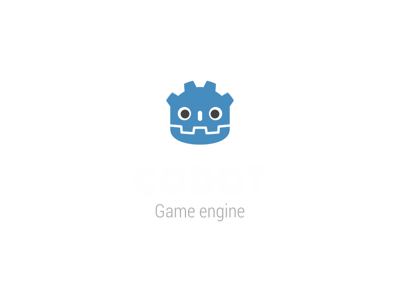

원작 SD건담 캡슐파이터에서 영감을 받은 비공식 팬 데모입니다.
Rx78 — nickqd SD MS-06F Zaku II — krit yamsaso CC BY 4.0 · 크기/방향 보정, 메쉬 병합/LOD, 강체 부품 애니메이션 적용.
Sci-fi Sounds · Blaster Kit — Kenney, CC0.
WASD 이동 · Space 점프/공중 부스터 · Shift 대시좌클릭/F 사격 · 우클릭/V 사벨 · R 재장전Tab 표적 · Q/E 무장 · Esc 일시정지 · L 저사양 · M 음소거터치: 왼쪽 이동, 오른쪽 버튼, 나머지 영역 시점 드래그.